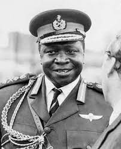
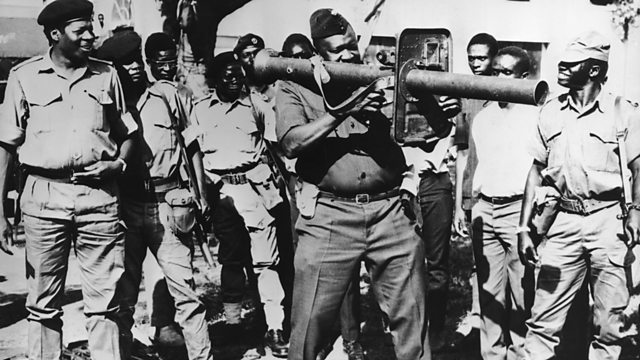
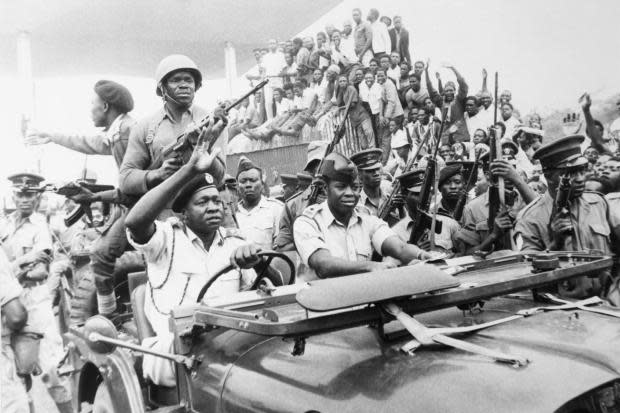

Idi Amin Dada
1928.május.27-én született Ugandában. Ugandai katona, a Brit Birodalmi Haderő tisztje, majd Uganda hadseregének tábornoka, 1971-től 1979-ig Uganda elnöke. Édesapját Andreas Nyabire-nak hívták, a Kakwa nevű afrikai törzsből származott. Eredetileg római katolikus volt, majd 1910-ben áttért az iszám hitre, és átvette az Amin Dada nevet. Édesanyja Assa Aette volt, aki a Lugbara törzsből származott, amely egy közép-szudáni eredetű nép. Amin sosem beszélt életéről, illetve nem is írt mint más politikusok. (Tudj meg többet az életéről)
Uralkodását az emberiesség elleni bűncselekmények, politikai elnyomás, etnikai tisztogatás, a tömeges, a bíróság ítélet nélküli kivégzések, valamint az indiaiak Ugandából történő kitoncolása jellemezte.

Különösen az Obotét támogató alcsoli és langi törzs körében végzett népírtást, de mivel a törzs tagjai között a név gyakran O-val kezdődik, sok embert pusztán a neve miatt öltek meg.

Husszein Szulejmán dandártábornok fejét egy hűtőben tárolta sok más ellenségével együtt, amiket megrémítés gyanánt másoknak is megmutatott. Egyeseket arra kényszerített, hogy hatalmas kalapácsokkal egymást verjék agyon, egyesekre ő maga ugrott rá és roppantotta össze mellkasukat hatalmas súlyával. A holttestek kiadásáért váltságdíjat kért. Bob Astles őrnagyot is ő kínozta meg, annak ellenére, hogy korábban ő intézte a diktátor propagandaügyeit.

A mai napig nem tisztázott, hányan vesztették életüket Amin rezsimje alatt, a különböző becslések 100-500 ezer között mozognak.